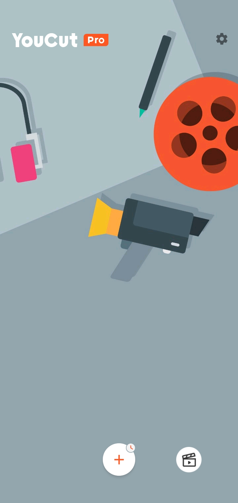
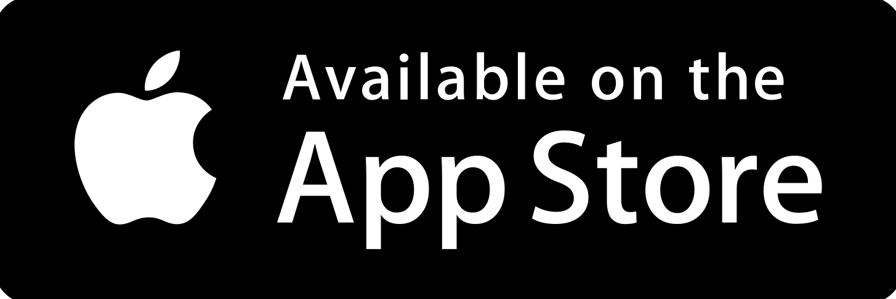
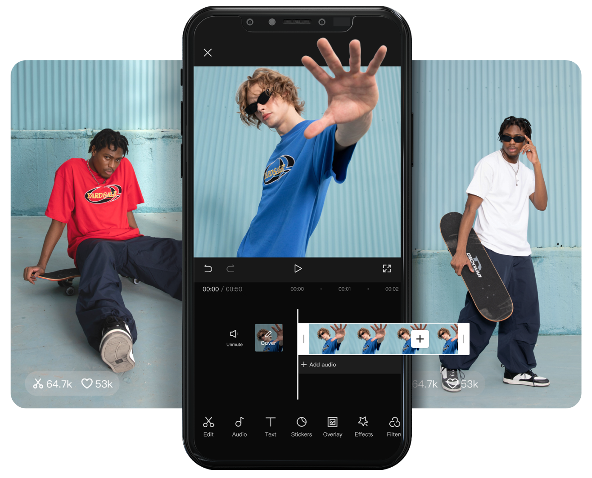

<!DOCTYPE html>

<html>
  <head>
    <meta charset="utf-8" />
    <title>Vernetfilms</title>
    <link rel="stylesheet" href="style.css" />
  </head>
</html>
<html>
    <body>
        <div id="background">
            <h1>Les logiciels utilisés<br>pour le montage des vidéos :</h1>
            <h2>YouCut Video Editor :<br><br></h2>
             <br>
            <a href="https://play.google.com/store/apps/details?id=com.camerasideas.trimmer&hl=fr&gl=US"> </a> <a href="https://apps.apple.com/us/app/youcut-ai-video-editor/id1620499741"></a>
            <h3>YouCut Video Editor est une application de montage vidéo.<br>Il est disponible sur les stores gratuitement et pour les plus<br>perfectionnés, un abonnement pro avec plus de fonctionnalités.<br></h3>
            <h2><br>CapCut :</h2>
            
            <h3>CapCut permet de mettre en scène vos vidéos et photos,<br> d'ajouter des effets, des animations, des autocollants, du texte...<br>Il permet aussi de retirer l'arrière plan d'une vidéo ou photo.<br><br></h3>
    </body>
</html>